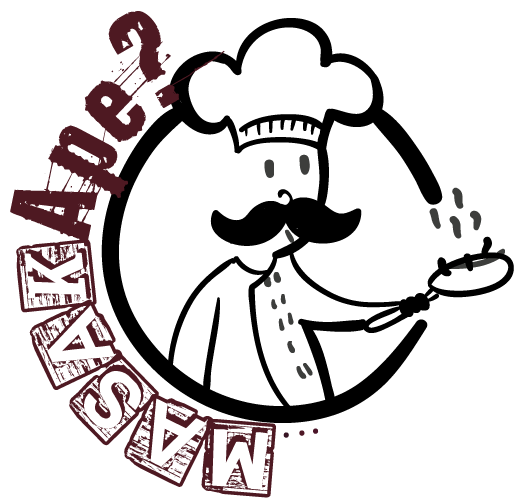

<ion-view>
  <ion-pane>
    <ion-content class = "scroll">
      
      <div class = "center"> 
        <p><strong><center> Have the ingredients? Yet you don't have the idea what to cook? Try me and let's cook together.</center></strong></p>
      </div>

      <div class="row">
        <div class="col col-50 col-offset-25">            
          <a class="button button-positive" href="#/cuisine">Let&#39;s Get Started&#33;</a>
        </div>
      </div>
    </ion-content>   
  </ion-pane>
</ion-view>